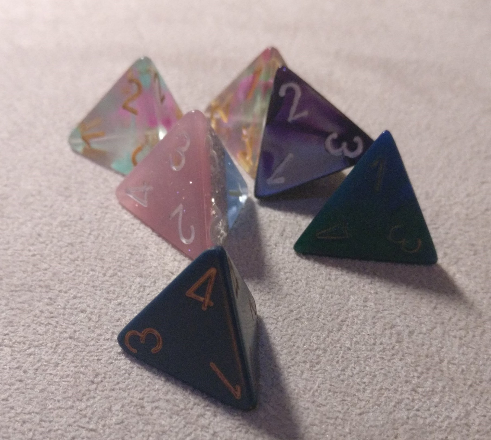
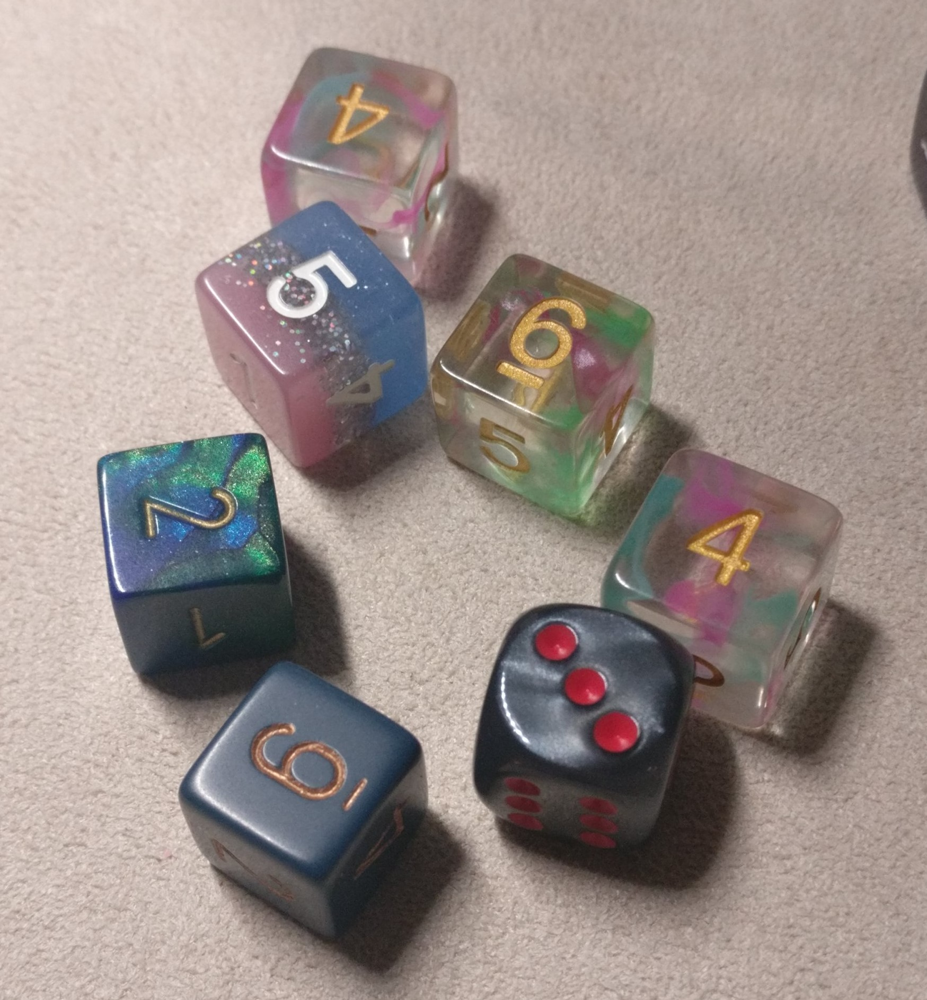
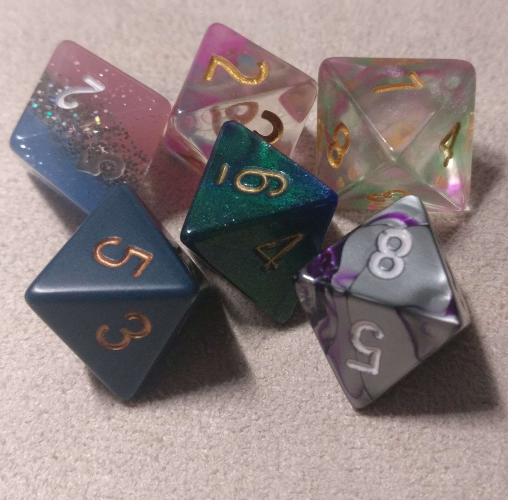
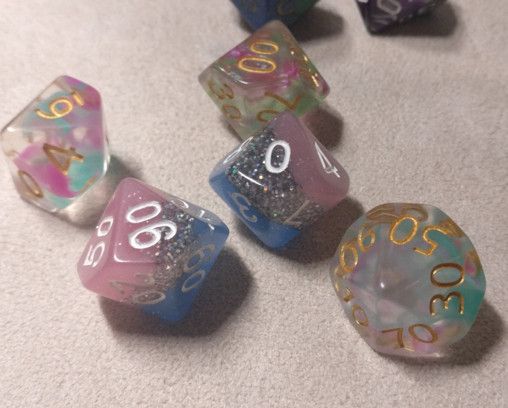
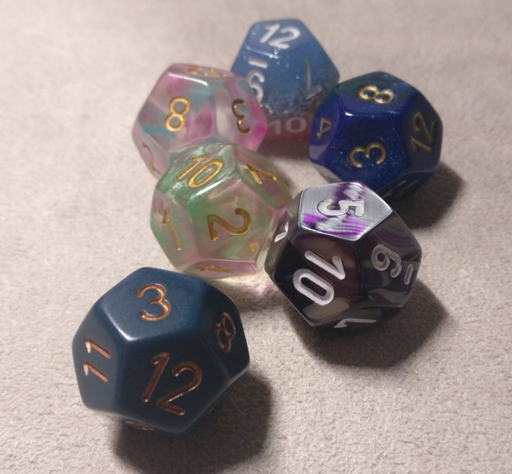
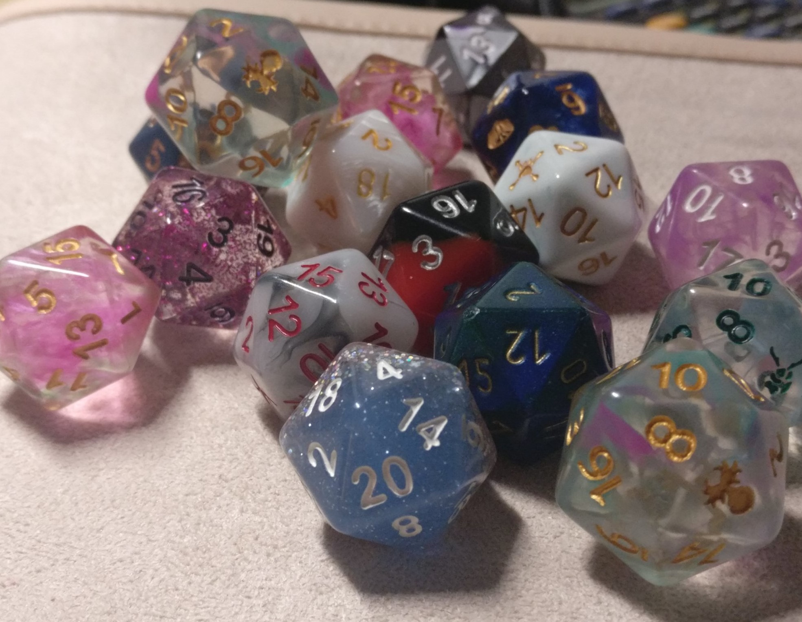

| Name | Image | Uses |
|---|---|---|
| d4 |  | Typically used when quaffing healing potions or casting Healing Word. These little pyramids are also used when making an unarmed strike against a foe, also known as punching someone. |
| d6 |  | Most often used in spellcasting, these are also used by some of the cheaper melee weapons. Cast a Fireball at 5th level, and you get to roll 10 of these! |
| d8 |  | Typically used by the melee weapons most would rate as "good." Used in spells as well, however if you play a martial class chances are you'll want to have plenty of d8's handy. |
| d10 |  | Almost only ever used with some pretty high-level spells in terms of rolling for damage. These dice are also used when making rolls on a table, roll two af them, one of those having the double digits on it, and these d10s become percentile dice. You read the double digit die as the tens value and the single digits die as the ones value. Use in this way by clerics requesting divine intervention. |
| d12 |  | Almost never used. By anyone. Those that get to use the d12 would be barbarians, as they get to use a d12 as their hit dice (the only class that does), and they will typically be using a greataxe (the only weapon that uses a d12) |
| d20 |  | The d20 is used almost all the time in 5e. You roll it for skill checks, when attacking a creature with either a weapon or a spell, when making saving throws after triggering a trap, etc. Almost any time that you ask the DM to do something, or if the DM asks you to do something, there will be a d20 involved. |